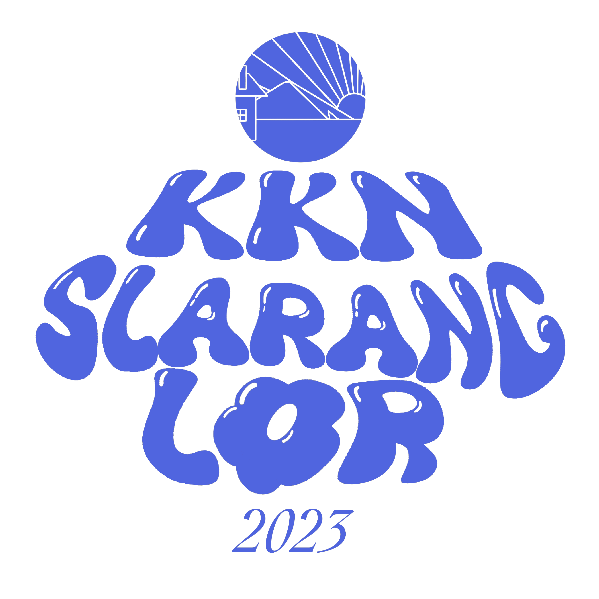

Pengenalan Web
Sistem Informasi Desa (SID)
KKN Universitas Jenderal Soedirman 2023

Susunan Materi
-
1. Konsep Web dan Sistem Informasi Desa (SID)
Dasar-dasar mengenai:
- • Apa itu Web?
- • Apa itu Sistem Informasi?
- • Apa itu Web SID?
-
2. Pengaktifan Web Desa
Pemaparan salah satu program kerja KKN mengaktifkan web desa.
-
3. OpenSID dan Fitur-fiturnya
Platform OpenSID dan fitur-fiturnya untuk membantu pengelolaan dan manajemen informasi desa.
-
4. Demo Rancangan Web
- Web Desa
- Administrasi Umum
- Layanan Surat
- Absensi Kehadiran
Apa itu Web?
Halaman/kumpulan halaman yang berisi informasi, teks, gambar, video, dan elemen lain yang disusun secara terstruktur dan diakses melalui internet.


Apa itu Sistem Informasi?
Sistem yang digunakan untuk mendukung pengelolaan serta manajemen data dan informasi.
- Sistem Informasi Manajemen
- Sistem Informasi Akademik (SIAKAD)
- Sistem Informasi Keuangan (SIKEU)
- Sistem Informasi Desa (SID)
- dll.
Web Sistem Informasi Desa (SID)
Web yang di dalamnya memuat tentang informasi data penduduk, layanan publik, serta informasi tentang kegiatan dan program desa untuk mendukung pengelolaan dan digitalisasi desa.
* * *
Mengapa Web SID Diperlukan?
- Pemerintah Desa lebih transparan dan akuntabel
- Arsip dan Rekapitulasi secara Digital
- Layanan Publik lebih baik
- Warga mendapat akses lebih baik pada informasi desa
Program Kerja KKN Mengaktifkan Web Desa
Salah satu program kerja KKN Unsoed 2023 di bidang layanan pemerintah desa yaitu mengaktifkan web desa. Dengan adanya program kerja ini, diharapkan pemanfaatan teknologi informasi dan komunikasi dapat meningkatkan transparansi, partisipasi masyarakat, dan efisiensi pelayanan publik di desa.
* * *
OpenSID
OpenSID adalah Sebuah Sistem Informasi Desa yang dikembangkan oleh Lembaga Hukum Perkumpulan Desa Digital Terbuka (OpenDesa) bersama Komunitas Pegiat Desa untuk mendukung fungsi dan tugas Administrasi Pemerintahan Desa seperti Administrasi Umum, Administrasi Kependudukan, Administrasi Keuangan, Administrasi Pembangunan, Layanan Publik, Layanan Informasi Publik dan lainnya.
* * *
Fitur-Fitur OpenSID
- Artikel atau berita desa
- Rekapitulasi data warga
- Lapak desa
- Pengaduan warga
- Galeri foto
- Daftar perangkat desa
- Data kependudukan
- Statistik kependudukan
- Administrasi umum
- Layanan surat
- Menyampaikan pesan
- Menyampaikan pesan kepada admin
- Mengajukan permohonan pembuatan surat secara online
- Absensi secara online
- Rekap kehadiran
Bagaimana agar web bisa diakses?
-
Hosting
Tempat menyimpan data dan file web agar bisa diakses publik
-
Domain
Alamat/link yang digunakan untuk membuka web
Demo Rancangan Web
Terima Kasih!
Interactive 3D Graphs
Playful and interactive discovery helps understanding
Animations
Step One
| Duration | 20-30s |
| Idle | 70% |
→
Step Two
| Duration | 10-15s |
| Idle | 20% |
Why Webslides?
aaaa
Interactive Examples
Draw points in different colors to see a corresponding decision tree.
Code Highlighting
Beautiful code highlighting with highlight.js
>>> # list comprehension ❤️
>>> data = [ii for ii in range(10)]
>>> # best code ever
>>> print("hello world")
hello world
>>> # some math
>>> import numpy as np
>>> x = np.random.random((30, 3))
Galleries
-
Manuel
Odd dude who loves tea.
-
Codie
Another odd dude who loves tea.
-
Tea
The love of our life.
I think we should teach our kids how to be more innovative, how to be more creative, and how to be more constructive, all the things machines can’t do.
Jack Ma (Alibaba Group Founder)